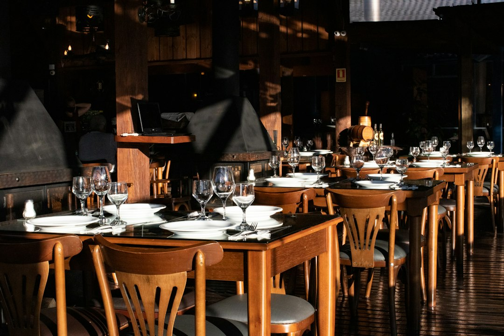

Ridurre Sprechi di Tempo e Costi in Ristorazione: La Guida Operativa per Menu Digitali ed Efficienza Quotidiana

Riduzione drastica di sprechi e costi nella ristorazione: strategie digitali per ristoratori, chef e titolari di trattorie, pizzerie gourmet e agriturismi
- Il menu cartaceo tradizionale è sempre più ignorato, causando perdita di vendite e inefficienza operativa.
- I costi di produzione contenuti dei video promozionali e l’aggiornamento digitale sono spesso proibitivi per le strutture ristorative medio-piccole.
- Locanda Digitale offre una suite AI integrata per digitalizzare menu con foto HD, video 3D e QR Code, abbattendo tempi, costi e aumentando il coinvolgimento clienti.
Analisi approfondita della notizia e delle implicazioni operative
Nel contesto attuale della ristorazione, la comunicazione visiva di qualità è diventata un elemento imprescindibile per attrarre e fidelizzare la clientela. Tuttavia, molti ristoratori, chef e titolari di trattorie, pizzerie gourmet e agriturismi continuano ad affidarsi a menu cartacei statici e testuali, che risultano sempre più ignorati da un pubblico sempre più digitale e visual. Parallelamente, le dinamiche di comunicazione social richiedono contenuti video e immagini coinvolgenti, ma la creazione di materiale audiovisivo professionale ha costi elevati e richiede tempo, risorse e competenze specializzate che la maggior parte delle realtà medio-piccole non possono permettersi.
Questa situazione crea un circolo vizioso di inefficienza: menu poco attrattivi riducono l’esperienza cliente e lo stimolo all’acquisto di piatti di qualità; l’assenza di contenuti dinamici sui social limita la visibilità e l’engagement; le ore dedicate a questi tentativi di marketing tradizionale aumentano i costi interni e sottraggono tempo prezioso alla gestione operativa quotidiana.
Le conseguenze e i costi di non agire
Ignorare l’evoluzione digitale nel settore della ristorazione porta a costi nascosti, spesso sottovalutati ma pesanti. I menu cartacei di solo testo, oltre a risultare scarsamente attrattivi, sono facilmente danneggiabili e devono essere ristampati frequentemente, con costi materiali e ambientali. La mancanza di rappresentazione visiva dei piatti diminuisce la percezione del valore della proposta culinaria, con ripercussioni dirette sul fatturato.
Dal lato comunicazione, affidarsi a videomaker esterni comporta investimenti che possono variare da diverse centinaia a migliaia di euro, con tempistiche lunghe di realizzazione e rigidità nel replicare frequentemente aggiornamenti o offerte speciali. Coloro che tentano di creare contenuti con strumenti fai-da-te spesso incontrano risultati mediocri che non valorizzano il brand e il prodotto, generando ulteriori sprechi di risorse.
In definitiva, si tratta di un duplice spreco: di denaro diretto e di tempo operativo, entrambi risorse critiche per qualsiasi struttura ristorativa che punta a crescere in un mercato competitivo senza margini di errore.
Come Locanda Digitale risolve il problema
Locanda Digitale, la suite AI sviluppata specificamente per la ristorazione proposta da RM Studio, rappresenta la soluzione naturale e immediata a queste criticità. Grazie a una tecnologia avanzata ma accessibile, il software consente di digitalizzare il menu cartaceo arricchendolo con fotografie ad alta definizione, trasformando ogni pagina in una vetrina visiva capace di coinvolgere ed emozionare il cliente ancor prima dell’ordine.
Il vero punto di svolta è la possibilità di creare spot video in 3D verticali (9:16) alla frequenza di 60 FPS partendo semplicemente dalle foto reali dei piatti. Questa soluzione elimina la necessità di ricorrere a costosi servizi di videomaking esterno, offrendo contenuti dinamici e professionali pronti per il web e i social media.
Infine, la generazione automatica di QR Code da posizionare sul tavolo permette di accedere istantaneamente al menu digitale, riducendo i tempi di attesa e azzerando i problemi legati al tradizionale menu cartaceo: igiene, usura e difficoltà di aggiornamento.
Il risultato è una riduzione drastica di sprechi di tempo e costi di gestione quotidiana, una maggiore attrattività della proposta culinaria e un concreto incremento del coinvolgimento e della soddisfazione dei clienti.
| Gestione Tradizionale | Con Locanda Digitale |
|---|---|
| Menu cartacei statici, solo testo, senza immagini realistiche | Menu digitali con fotografie HD e aggiornamenti in tempo reale tramite QR Code |
| Promozione social con foto scattate amatorialmente o costosi video esterni | Spot video in 3D verticali a 60 FPS generati automaticamente da foto reali |
| Alti costi e tempi lunghi per creazione contenuti video | Costo unico una tantum, creazione rapida ed autonoma senza abbonamenti |
| Aggiornamenti menu complessi e costosi | Aggiornamenti semplici e immediate digitali senza ristampe |
💡 Ti è stato utile questo approfondimento?
Condividilo con un collega o un amico del settore Ristoratori, Chef, Titolari di Trattorie, Pizzerie Gourmet e Agriturismi a cui potrebbe interessare!
FAQ – Domande frequenti su Locanda Digitale per la ristorazione
1. Posso utilizzare Locanda Digitale senza conoscenze tecniche avanzate?
Sì, l’interfaccia è studiata per essere intuitiva e guidata, permettendo anche a utenti con competenze tecniche limitate di creare menu digitali e video accattivanti in autonomia.
2. È possibile aggiornare rapidamente il menu digitale in caso di variazioni o stagionalità?
Assolutamente, gli aggiornamenti sono immediati e non richiedono ristampe o costi aggiuntivi, garantendo flessibilità e tempestività.
3. Quali sono i costi di Locanda Digitale?
Disponibile con due soluzioni: Social 3D Starter a €79 una tantum per la creazione di video e menu base, e Visual Menu Pro a €149 per funzionalità avanzate, entrambi senza abbonamento.
Inizia Subito
Social 3D Starter a €79 una tantum o Visual Menu Pro a €149. Nessun abbonamento.
Fonti Ufficiali e Risorse Esterne
Scopri l'Intelligenza Artificiale per la tua attività
Ottimizza i processi e aumenta le vendite con le soluzioni B2B di RM Studio.
Scopri Locanda Digitale